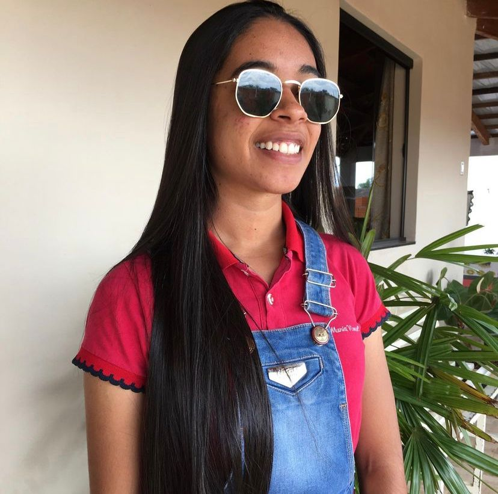

SOBRE
Esta página foi criada como método avaliativo da matéria Programação Web ministrada pela professora Stefani Pires. O objetivo é ensinar e demonstrar o HTML e o CSS de forma clara, objetiva e didática para os próximos programadores que nos visitarem.
Ela foi desenvolvida em conjunto pelo grupo Cuscuz com Ovo, que conta com quarto (4) alunos do curso Técnico em Informática do Instituto Federal de Educação, Ciência e Tecnologia da Bahia - Campus Irecê, esperamos muito que você goste.
DESENVOLVEDORES
ALÍCIAOlá! Meu nome é Alícia Gianny, sou do interior da Bahia e quase técnico de informática pelo Instituto Federal da Bahia Campus-Irecê. Participei do desenvolvimento da página cuscuz com ovo com montagem de protótipos, aplicação do design com CSS, página principal e revisão. |
|
|  |
CAMILLYOii!! Sou Camilly Camacam, aluna do quarto ano do curso técnico de informática no Instituto Federal da Bahia Campus Irecê. Atualmente moro em Irecê Bahia, e fui uma dos desenvolvedores do site Cuscuz com Ovo, atuando na parte de conteúdos relacionados ao HTML. |
GEANOi! Sou Gean Martins, moro no interiorzinho da Bahia, mais precisamente na cidade de Irecê, e estudo no Instituto Federal da Bahia campus Irecê. Sou um dos desenvolvedores da página cuscuz com ovo, onde ajudei a criar o conteúdo de HTML. |
|
 |
NÁDILAOoi! Meu nome é Nádila Andrade, sou estudante do Instituto Federal da Bahia e estou no quarto ano do curso Técnico em Informática. Moro na cidade de Irecê, interior da Bahia. Participei do desenvolvimento do site em toda parte do conteúdo de CSS (seus tópicos e exemplos), e na criação da página SOBRE (esta que você está agora). |